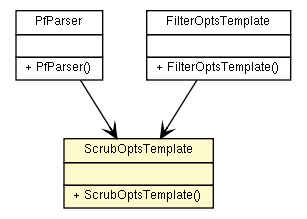

fr.univrennes1.cri.jtacl.equipments.openbsd
Class ScrubOptsTemplate

java.lang.Object
 fr.univrennes1.cri.jtacl.equipments.openbsd.ScrubOptsTemplate
fr.univrennes1.cri.jtacl.equipments.openbsd.ScrubOptsTemplate
public class ScrubOptsTemplate
- extends java.lang.Object
Template to build scrub options. This class is used at parsing time
as an intermediate storage.
- Author:
- Patrick Lamaiziere
| Methods inherited from class java.lang.Object |
clone, equals, finalize, getClass, hashCode, notify, notifyAll, toString, wait, wait, wait |
ScrubOptsTemplate
public ScrubOptsTemplate()
getMaxmss
public java.lang.String getMaxmss()
setMaxmss
public void setMaxmss(java.lang.String maxmss)
getMinttl
public java.lang.String getMinttl()
setMinttl
public void setMinttl(java.lang.String minttl)
isNodf
public boolean isNodf()
setNodf
public void setNodf(boolean nodf)
isRandomid
public boolean isRandomid()
setRandomid
public void setRandomid(boolean randomid)
isReassemble_tcp
public boolean isReassemble_tcp()
setReassemble_tcp
public void setReassemble_tcp(boolean reassemble_tcp)
getSettos
public java.lang.String getSettos()
setSettos
public void setSettos(java.lang.String settos)
Copyright © 2010. All Rights Reserved.